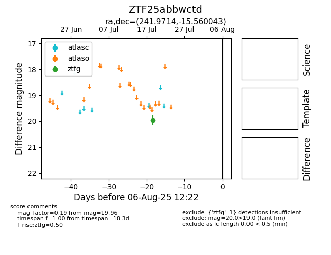

Target ZTF25abbwctd at 2025-07-23 11:52, see:
FINK: fink-portal.org/ZTF25abbwctd
Lasair: lasair-ztf.lsst.ac.uk/objects/ZTF25abbwctd
ALeRCE: alerce.online/object/ZTF25abbwctd
alt names
ZTF25abbwctd (ztf,fink)
coordinates:
equatorial (ra, dec) = (241.9714,-15.56004)
galactic (l, b) = (357.0790,+26.03392)
photometry
last ztfg=19.96
1 ztfg detections
